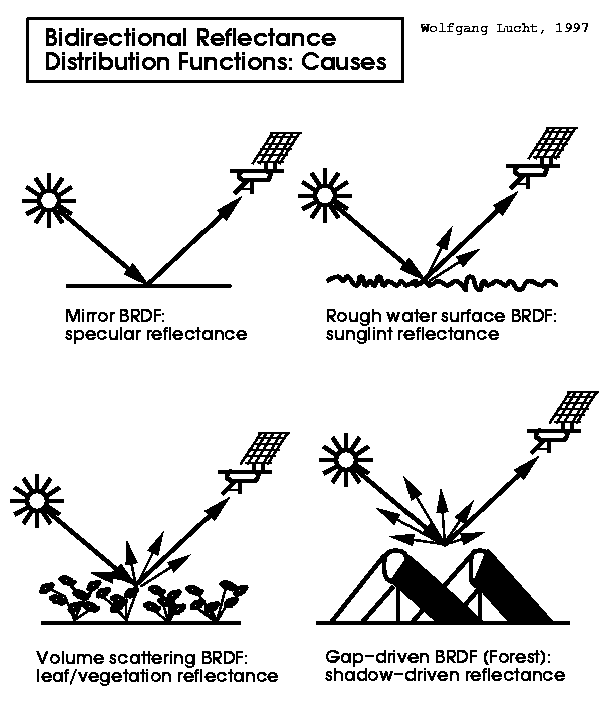

1 Introduction to Remote Sensing
1.1 Summary
This week is about basic of Reomote Sensing. It is about “What is reomote sensing?” and about “how it works”.
What is remote sensing?
NASA defines remote sensing as acquiring information from a distance
Remote sensing is a technology that obtains information from a distance without contact with the observed object. It uses electromagnetic waves reflected or emitted from objects to investigate the components, types, and states of objects. In the case of ocean remote sensing, ocean currents can be estimated by measuring water temperature with an infrared sensor of an artificial satellite, the structure of upwelling or eddies can be identified, and the ocean circulation structure can also be understood. In the case of meteorological remote sensing, cloud temperature, classification, dust, ozone content, wind speed, etc. can be observed. Remote sensing is also used to monitor glacier and volcanic activity, and to study abnormal climate caused by El Niño.
Type of sensors
When we use Remote sensing we have to collet data by various of sensors. We can collect data by
Satellites
Phones(aerial imagery)
Drones
Phones
Free standing on the ground or sea

Source for this image https://www.industrytap.com/remote-sensing-sustainable-land-use/33218
Two types of remote sensing sensors
There are two Type of sensors; Passive sensors and Active sensors. Let’s see more specifically.
Passive sensors
This sensors don’t emit anytning and use energy that is available. And they detecting reflected energy(in electromagnetic waves) from the sun. For example, human eye, camera and satellite sonsor.
Active sensors
This type of sensors have an energy source for illumination and actively emits electormagnetic waves and then waits to receive. Electromagnetic radiation propagates as waves. So we can see through clouds, volcanic ash, atmospheric conditions and also collect data at night. Such as Radar, X-ray and LiDAR.

Passive and active sensors systems working principles. Source:Nadhir Al-Ansari
Causes of bidirectional reflectance distribution functions
Sensors collect data from energy being reflected from the surface that is smooth or diffuse. When electromagnetic waves are reflected from the surface , the waves can be linked to surface properties - roughness, shape, orientation, moisture, salinity and density. Furthermore, SAR data less commonly documented surface interactions.

Source: Professor Crystal Schaaf’s Lab
Explore the 4 resolutions of remotely sensed data
Remotely sensed data and applications will vary based on the four resolutions.
Spatial
It is the size of the raster cells(grid per pixels). It’s range between 10cm and several kilometers.

Source https://andrewmaclachlan.github.io/CASA0023-lecture-1/#54
Spectral
Images seen by the human eye are perceived as wavelengths of red, green, and blue, which are visible light rays. A color different from the wavelength reflected by the object is recognized as the color absorbed. However, we are subject to the constraints of the atmospheric window (water vapor, ozone, carbon dioxide and atmospheric molecules block part of the spectrum). Therefore, we can observe it only where it is not absorbed by the atmosphere.
We classify the type or spectral resolution according to the number of bands we observe. Each band is usually provided as a separate raster layer. This means that the spectral signature can be either discrete or continuous.

Source: NASA Science
Temporal
This means that the revisit time of the sensor needs to be considered. For example, return visit times are daily, every 7 days or upon request. Also, lower resolution means larger pixels.
Radiometric
The ability of a sensor to identify and display small differences in energy. Higher means more sensitive.
8 bits = 256 possible values
4 bits = 16 possible values
Furthermore, we have to consider type of orbit. There are two type of orbits. First, geosynchronous orbit (GSO) is that satellite matches the Earth’s rotation. Second, geostationary orbit, this orbit holds same position, usually only for communications but some sensors are geostationary.

Source: American Scientist
1.2 Applications
1.3 Personal Reflection
Before entering CASA, I majored in cadastral science in undergraduate and had 3 years of experience working for a company that did cadastral surveying and spatial information analysis. I learned about Remote Sensing Introduction 9 years ago when I was an undergraduate. Based on this, I received training on a project to create a flood trace map when I work as a junior engineer at company.
However, this module is an updated version of the knowledge I have previously learned and acquired. I was amazed at how much the resolution has improved. The module also taught us that improvements in remote sensing satellites such as the higher resolution Sentinel and Google Earth Enngine (GEE) allow for a wide range of analyzes such as object-based image detection. In this week’s module, I was able to review the basics and principles of remote sensing that I had learned in the past and learned about advanced technology.